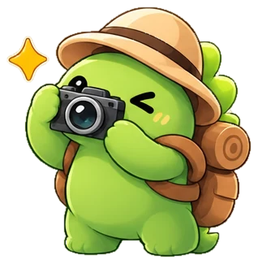
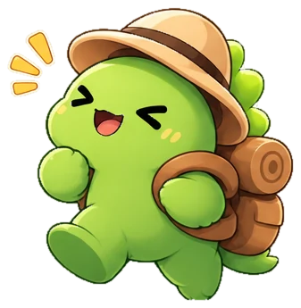
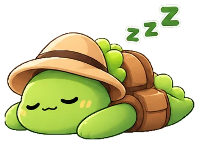

Собрать места в одну коллекцию
Готовый каталог достопримечательностей плюс собственные точки для всего, чего в каталоге нет.
Loca Loca превращает поездки в личную карту. Находи достопримечательности в каталоге, отмечай посещённые, а к каждому месту добавляй дату, оценку, заметку и фотографии.
Поездки обычно рассыпаются по телефону: адреса лежат в закладках, впечатления — в заметках, фотографии — в галерее, а список «хочу туда» живёт в голове. Loca Loca собирает всё это вокруг самого места: у каждой достопримечательности и у каждой собственной точки на карте появляется своя запись.
Приложение не строит маршруты и не продаёт билеты. Его задача проще: чтобы через год можно было открыть карту и вспомнить, где ты был, что понравилось и куда ещё собирался.
Готовый каталог достопримечательностей плюс собственные точки для всего, чего в каталоге нет.
Список «Хочу посетить» хранится отдельно от посещённых мест, поэтому сразу видно, что уже было, а что только впереди.
В одной записи лежат дата, оценка от 1 до 5, впечатления, заметки и фотографии.
Данные привязаны к аккаунту, а не к одному устройству: войди на другом ПК, и коллекция будет на месте.
Шесть частей приложения, из которых складывается личная карта путешествий.
Поиск по названию места, города или страны и выбор категории. У каждого места есть описание и краткая история.
Сохраняй идеи для будущих поездок отдельно от посещённых мест. Съездил — добавь посещение.
Дата, оценка по пятибалльной шкале, впечатления и заметки. Записи можно открыть и отредактировать.

Прикрепляй снимки к посещениям и собственным точкам. Они хранятся в облаке вместе с записью.
Кофейня во дворе или смотровая за городом. Поставь собственную точку и заполни её так же подробно.
Коллекция показана на карте. На главном экране считаются места, города, страны, посещения и фотографии.
Четыре шага — и первое место уже лежит в твоей коллекции.
Придумай логин и пароль (не короче шести символов) и напиши, как к тебе обращаться.
Ищи в каталоге по названию, городу или стране либо поставь собственную точку на карте.
«Хочу посетить», если только собираешься, и «Добавить посещение», если уже побывал.
Дата, оценка, впечатления, заметки и фотографии складываются в одну запись.
Так выглядит заполненная запись о посещении. Место и текст в примере придуманы, а набор полей такой же, как в приложении.
Прага · Чехия
Утром почти нет туристов, а свет в узких улицах оказался лучшим за всю поездку.
Кофейня на углу у площади — вернуться за круассанами. Билеты в музей лучше взять заранее.
Облик Loca Loca строится на трёх идеях: карта, бумажные заметки и спутник-маскот.
Каталог, списки и записи нужны, чтобы наполнять карту. Она остаётся главным экраном дневника.
Записи оформлены как карточки: светлые поверхности, крупные заголовки, мягкие тени и минимум служебных элементов.
Маскот-путешественник встречает в приложении и на сайте. Он ищет, снимает, записывает и радуется поездкам.

Радуется поездке
Отдыхает после дорогиЧто происходит с паролем, записями и фотографиями — простыми словами.
Вход выполняется через сервер. Не используй один и тот же пароль на разных сайтах.
Приложение общается с сервером по протоколу HTTPS. Параметры базы данных не нужно вводить в установщик.
Посещения, оценки, заметки, планы, личные точки и фотографии хранятся в облаке и доступны после входа в аккаунт.
Деинсталлятор убирает приложение с компьютера, но не удаляет аккаунт. После новой установки достаточно войти.
Установщик ставит приложение, проверяет компонент Microsoft Edge WebView2, который нужен для карты, и подключает облачный сервер. Вводить параметры базы данных не нужно.
Вопросы по установке, ошибки в приложении, пожелания к функциям — всё можно присылать на почту.
Чтобы ответить быстрее, укажи версию Windows, что ты делал и что произошло вместо ожидаемого. Скриншот поможет. Пароли и данные карт присылать не нужно.
Да. Записи и фотографии привязаны к аккаунту, а не к устройству. Установи Loca Loca на втором компьютере и войди с тем же логином.
Нет. Вход, получение данных из облака и загрузка карты требуют подключения. Автономного режима пока нет.
Сервер может засыпать, если им долго не пользовались. Первый запрос после паузы будит его и может идти дольше обычного.
Программа и временные файлы на компьютере удалятся, а аккаунт, посещения, личные точки и фотографии останутся в облаке.
JPG, PNG, WebP, BMP и GIF.
В репозитории проекта на GitHub: там же опубликованы релизы и история изменений.